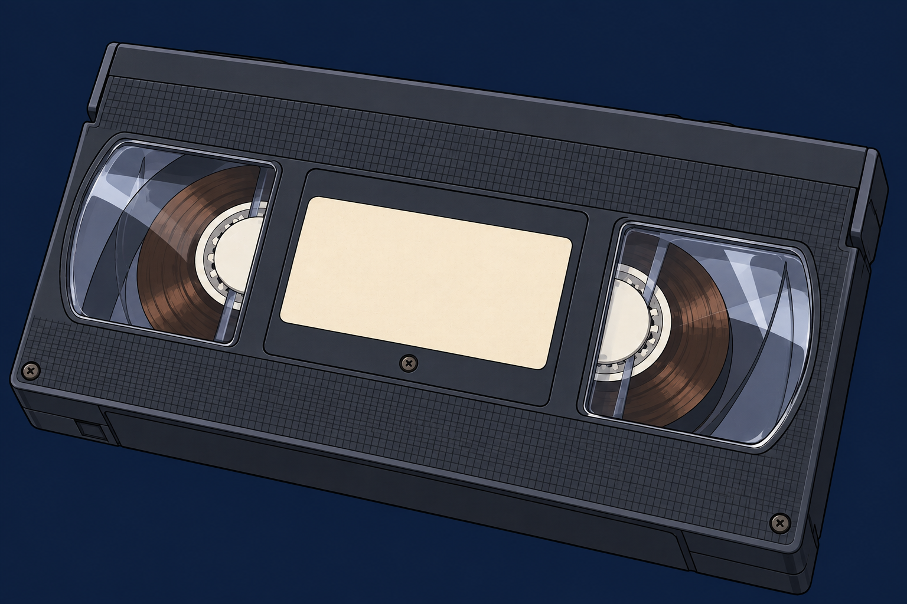

초등 5학년 과학 연속 스토리 게임 · 1·2편 체험판
1999년 12월 31일,
우리 학교가 사라진다
과학실 창고에서 발견한 비디오테이프.
그 속의 아이는 아직 알려 주지 않은 네 이름을 불렀다.
프롤로그 · 1편 혼합물의 분리 · 2편 날씨와 우리 생활
체험은 기존 저장을 덮어쓰지 않습니다 · 소리는 첫 클릭 뒤 재생됩니다

초등 5학년 과학 연속 스토리 게임 · 1·2편 체험판
과학실 창고에서 발견한 비디오테이프.
그 속의 아이는 아직 알려 주지 않은 네 이름을 불렀다.
프롤로그 · 1편 혼합물의 분리 · 2편 날씨와 우리 생활
체험은 기존 저장을 덮어쓰지 않습니다 · 소리는 첫 클릭 뒤 재생됩니다